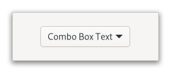

Gtk.ComboBoxText¶
Example¶

- Subclasses:
None
Methods¶
- Inherited:
Gtk.ComboBox (27), Gtk.Widget (183), GObject.Object (37), Gtk.Accessible (18), Gtk.Buildable (1), Gtk.CellEditable (3), Gtk.CellLayout (9)
- Structs:
class |
|
class |
|
|
|
|
|
|
|
|
|
|
|
|
|
|
|
|
Virtual Methods¶
Properties¶
Signals¶
Fields¶
Class Details¶
- class Gtk.ComboBoxText(**kwargs)¶
- Bases:
- Abstract:
No
A
GtkComboBoxTextis a simple variant ofGtkComboBoxfor text-only use cases.<picture> <source srcset=”combo-box-text-dark.png” media=”(prefers-color-scheme: dark)”> <img alt=”An example
Gtk.ComboBoxText" src=”combo-box-text.png”> </picture>GtkComboBoxTexthides the model-view complexity ofGtkComboBox.To create a
GtkComboBoxText, use [ctor`Gtk`.ComboBoxText.new] or [ctor`Gtk`.ComboBoxText.new_with_entry].You can add items to a
GtkComboBoxTextwith [method`Gtk`.ComboBoxText.append_text], [method`Gtk`.ComboBoxText.insert_text] or [method`Gtk`.ComboBoxText.prepend_text] and remove options with [method`Gtk`.ComboBoxText.remove].If the
GtkComboBoxTextcontains an entry (via the [property`Gtk`.ComboBox:has-entry] property), its contents can be retrieved using [method`Gtk`.ComboBoxText.get_active_text].You should not call [method`Gtk`.ComboBox.set_model] or attempt to pack more cells into this combo box via its [iface`Gtk`.CellLayout] interface.
The
GtkComboBoxTextimplementation of theGtkBuildableinterface supports adding items directly using the<items>element and specifying<item>elements for each item. Each<item>element can specify the “id” corresponding to the appended text and also supports the regular translation attributes “translatable”, “context” and “comments”.Here is a UI definition fragment specifying
GtkComboBoxTextitems: ``xml <object class=”GtkComboBoxText”>- <items>
<item translatable=”yes” id=”factory”>Factory</item> <item translatable=”yes” id=”home”>Home</item> <item translatable=”yes” id=”subway”>Subway</item>
</items>
</object> ``
- CSS nodes
`` combobox ╰── box.linked
├── entry.combo ├── button.combo ╰── window.popup
GtkComboBoxTexthas a single CSS node with name combobox. It adds the style class .combo to the main CSS nodes of its entry and button children, and the .linked class to the node of its internal box.Deprecated since version 4.10: Use [class`Gtk`.DropDown] with a [class`Gtk`.StringList] instead
- classmethod new()[source]¶
- Returns:
A new
GtkComboBoxText- Return type:
Creates a new
GtkComboBoxText.Deprecated since version 4.10: Use [class`Gtk`.DropDown]
- classmethod new_with_entry()[source]¶
- Returns:
a new
GtkComboBoxText- Return type:
Creates a new
GtkComboBoxTextwith an entry.Deprecated since version 4.10: Use [class`Gtk`.DropDown]
- append(id, text)[source]¶
-
Appends text to the list of strings stored in self.
If id is non-
Nonethen it is used as the ID of the row.This is the same as calling [method`Gtk`.ComboBoxText.insert] with a position of -1.
Deprecated since version 4.10: Use [class`Gtk`.DropDown]
- append_text(text)[source]¶
- Parameters:
text (
str) – A string
Appends text to the list of strings stored in self.
This is the same as calling [method`Gtk`.ComboBoxText.insert_text] with a position of -1.
Deprecated since version 4.10: Use [class`Gtk`.DropDown]
- get_active_text()[source]¶
- Returns:
a newly allocated string containing the currently active text. Must be freed with
GLib.free().- Return type:
Returns the currently active string in self.
If no row is currently selected,
Noneis returned. If self contains an entry, this function will return its contents (which will not necessarily be an item from the list).Deprecated since version 4.10: Use [class`Gtk`.DropDown]
- insert(position, id, text)[source]¶
- Parameters:
Inserts text at position in the list of strings stored in self.
If id is non-
Nonethen it is used as the ID of the row. See [property`Gtk`.ComboBox:id-column].If position is negative then text is appended.
Deprecated since version 4.10: Use [class`Gtk`.DropDown]
- insert_text(position, text)[source]¶
-
Inserts text at position in the list of strings stored in self.
If position is negative then text is appended.
This is the same as calling [method`Gtk`.ComboBoxText.insert] with a
NoneID string.Deprecated since version 4.10: Use [class`Gtk`.DropDown]
- prepend(id, text)[source]¶
-
Prepends text to the list of strings stored in self.
If id is non-
Nonethen it is used as the ID of the row.This is the same as calling [method`Gtk`.ComboBoxText.insert] with a position of 0.
Deprecated since version 4.10: Use [class`Gtk`.DropDown]
- prepend_text(text)[source]¶
- Parameters:
text (
str) – A string
Prepends text to the list of strings stored in self.
This is the same as calling [method`Gtk`.ComboBoxText.insert_text] with a position of 0.
Deprecated since version 4.10: Use [class`Gtk`.DropDown]